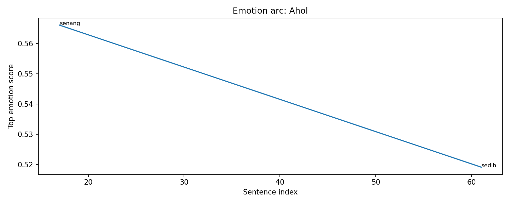
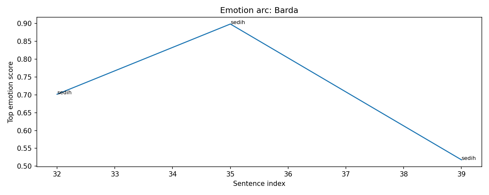

Overall Chapter Summary
WiraMadha faces a tough decision regarding quests in the game Nusantara Reborn Online, particularly against the powerful Naga Getih.
Chapter Drift Analysis
Similarity: 1.0000
Drift: 0.0000
Low drift. The chapter remains semantically close to the early story baseline.
Bug Severity Distribution
Story Bugs Found
🎉 No story bugs detected by current rules.
Character Sheet
Summary of character state, current actions, potential future plot hole risks, and acquired items/spells in this chapter.
Character Arc Analysis
Ahol

Emotional Arc Summary
Ahol experiences a shift from excitement to sadness in this chapter. Initially, there is joy associated with the intrigue of facing a legendary figure, as indicated by the mention of the ancient boss Ahol. However, this emotion dissipates as the narrative progresses, leading to a sentiment of sadness, likely linked to the impending challenges Ahol represents.
Action-Based Interpretation
Ahol is referenced concerning the daunting Naga Getih quest. However, the absence of direct actions from Ahol limits our understanding of his emotional journey. The mere mention of him in connection with potential conflict generates an initial thrill but transitions to a melancholic outlook regarding the challenges he embodies.
Key Turning Point
The pivotal moment occurs when the discussions shift from excitement about Ahol’s legendary status to the somber reality of preparing for combat against Naga Getih. This transition is marked by a spike in sadness as players face the grim reality of challenging a powerful foe.
Narrative Meaning
This emotional fluctuation highlights the duality of adventure—a blend of thrill and trepidation. It sets the tone for the overarching conflict in the storyline, focusing on the burdens that accompany heroism.
Potential Writing Issue
The emotional drop to sadness appears unsupported by concrete actions undertaken by Ahol, highlighting a potential inconsistency in the narrative’s emotional depth.
Barda

Emotional Arc Summary
Barda experiences a consistent emotional tone of sadness throughout the chapter. As the NPC initiating the quest, her interactions evoke a sense of melancholy, particularly through the dialogues that hint at her burden in assisting others.
Action-Based Interpretation
Barda welcomes Wira and points towards the Stable Master, showcasing her role in aiding the quest but reflecting an underlying sadness in her demeanor. The actions taken—addressing Wira and pointing to the mounts—do not align with a brighter emotional response, reinforcing her emotional state.
Key Turning Point
The most significant moment occurs when Barda realizes her role as a guide for the quest to Mount Bromo. While this position is crucial, it deepens the sadness evident in her interactions, indicating her internal conflict about being responsible for others’ journeys.
Narrative Meaning
Barda's emotional arc highlights the weight of expectations placed on her character. Her sadness signifies a deeper narrative theme of sacrifice and the burden of leadership within a gaming context, resonating with players’ real-life feelings of responsibility.
Potential Writing Issue
While Barda’s sadness is emphasized, there is a lack of dynamic action or resolution in her emotional state. If her sadness doesn't lead to any significant plot development or change, it could feel stagnant and potentially disengaging for the reader.
WiraMadha

Emotional Arc Summary
WiraMadha’s emotional journey begins with a sense of happiness as he stands at a crossroads of choices in the game. This is quickly interrupted by a wave of fear when faced with the daunting prospect of battling the Naga Getih. While he briefly regains his happiness upon contemplating the options, a deep sadness emerges when he firmly decides on Osmo. Although he smiles with satisfaction, the emotion suggests an underlying melancholy about his choice.
Action-Based Interpretation
WiraMadha's actions reflect his internal struggle. Initially standing still demonstrates his contentment in choosing. However, his decision-making process causes fear, illustrating the weight of the decision. Choosing Osmo involves a definitive action, showing commitment despite the sadness that follows, indicating a conflict between desire and responsibility.
Key Turning Point
The pivotal moment occurs when WiraMadha decisively selects Osmo. This act conveys a shift from indecision to resolution, despite the accompanying sadness.
Narrative Meaning
The narrative suggests that choices in games, much like in life, come with profound consequences that can evoke mixed emotions, highlighting the complexities of decision-making.
Potential Writing Issue
The emotional shift from fear to sadness may feel abrupt without more in-depth exploration of WiraMadha's thoughts and feelings surrounding his choice, indicating a possible inconsistency in developing his emotional journey.
Osmo

Emotional Arc Summary
Osmo's emotional journey in this chapter primarily reflects a mix of excitement, sadness, and surprise as he acquires and interacts with the swift mount. Starting with a sense of joy when selecting Osmo, a moment of sadness appears unexpectedly, perhaps hinting at deeper themes of loss or sacrifice.
Action-Based Interpretation
Osmo first selects the quest and acquires the mount named Osmo, a pivotal action that showcases his decisiveness. The transition from joy to sadness when he chooses Osmo could signify internal conflict, while the subsequent surprise reflects the impact of his acquisition.
Key Turning Point
The key turning point is Wira's unabashed decision to choose Osmo. This moment shifts his emotional state from initial happiness to a complex sorrow, suggesting he may weigh the consequences of his choice.
Narrative Meaning
This chapter hints at the themes of companionship and the burden of choice in a gaming context. Osmo's joyful feedback after mounting could symbolize the hope and thrill inherent in new beginnings.
Potential Writing Issue
The emotional drop to sadness appears abrupt and lacks a clear cause in the current context, which may create inconsistency in Osmo's emotional arc.
Cinta Bumi

Emotional Arc Summary
In this chapter, Cinta Bumi exhibits a predominant sadness, reflected in her character's responsibility as she guides others to Mount Bromo. Her emotions are heavily tied to duty and the weight of expectations within the game world.
Action-Based Interpretation
Cinta Bumi's actions are framed around her role as an archaeologist leading a quest. The choice to accompany WiraMadha to Mount Bromo signifies her commitment, but it is also a source of her emotional turmoil. This duty is underscored by NPC Barda’s acknowledgment of her importance.
Key Turning Point
The key emotional turning point occurs when Wira selects the quest, reflecting the deeper responsibilities placed on Cinta Bumi. This introduces an element of tension of carrying others' expectations, amplifying her emotional state.
Narrative Meaning
The chapter illustrates the burdens heroes carry in a quest-driven narrative. Cinta Bumi’s sadness emphasizes the sacrifices made for others, questioning the price of leadership.
Potential Writing Issue
While Cinta Bumi’s sadness is pronounced, there is a possible inconsistency in emotional depth as her actions primarily highlight duty rather than personal stakes, which could enrich her arc.
Event Timeline
Lore Graph
Nodes represent characters, scenes, events, items, facts, and locations.